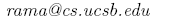

Chimera Installation Guide
We have developed and tested Chimera on Linux (Fedora cores, 2,3,4) but
it should work on other Linux distributions.
After downloading the latest version of Chimera, copy the
tarred-gzip file to the directory that you want Chimera to be installed
in.
Go to the directory that you copied the file and run the following
command:
tar -xvvzf chimera.tar.gz
This will create the chimera directory and all of its sub-directories
in the current folder.
Chimera uses auto-conf tool, therefore compilation should be
straightforward. Chang directory to the chimera and run the following
commands to compile the code:
./configure --prefix='current directory'
make install
Note: The generic auto-conf installation instruction is included in
INSTALL file in the chimera directory.
At this point you should have the compiled version ready to use. You
can test your installation by running the test program under test
directory.
Rama Alebouyeh

Last updated 2/16/06